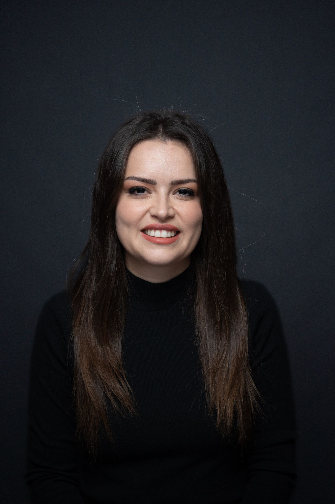
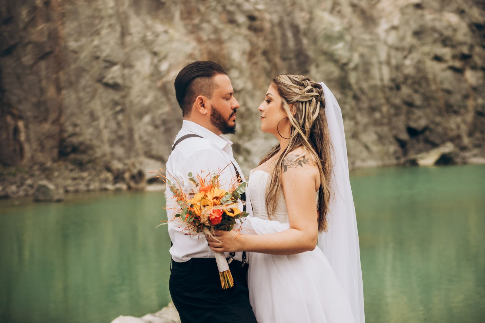
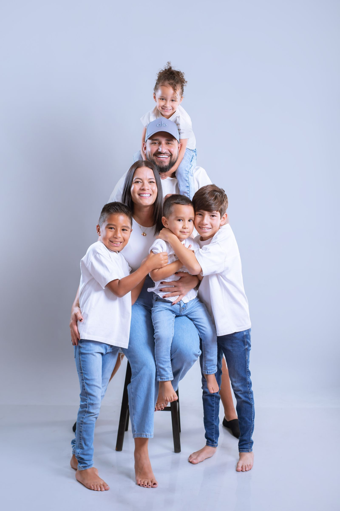
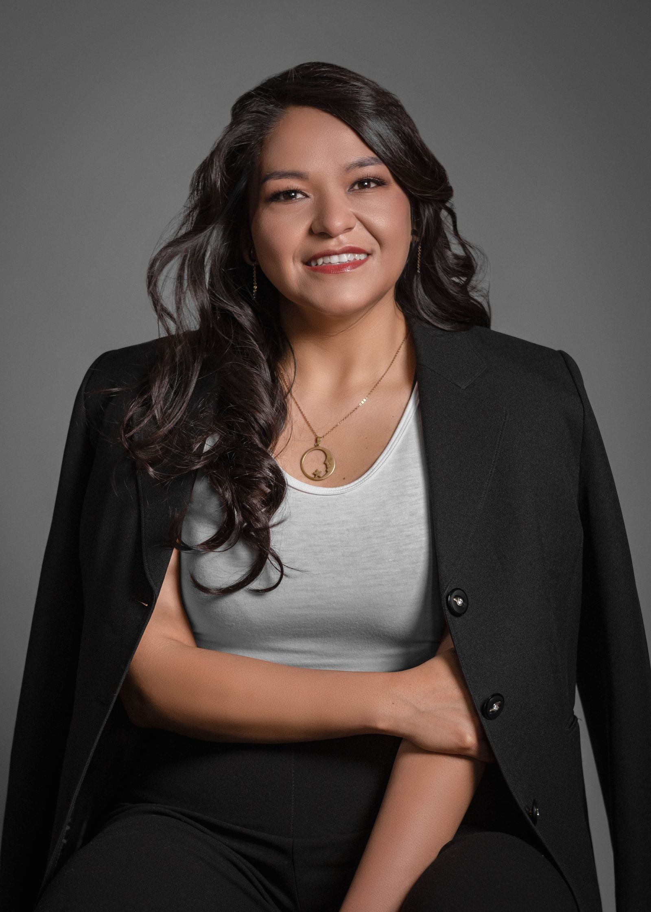
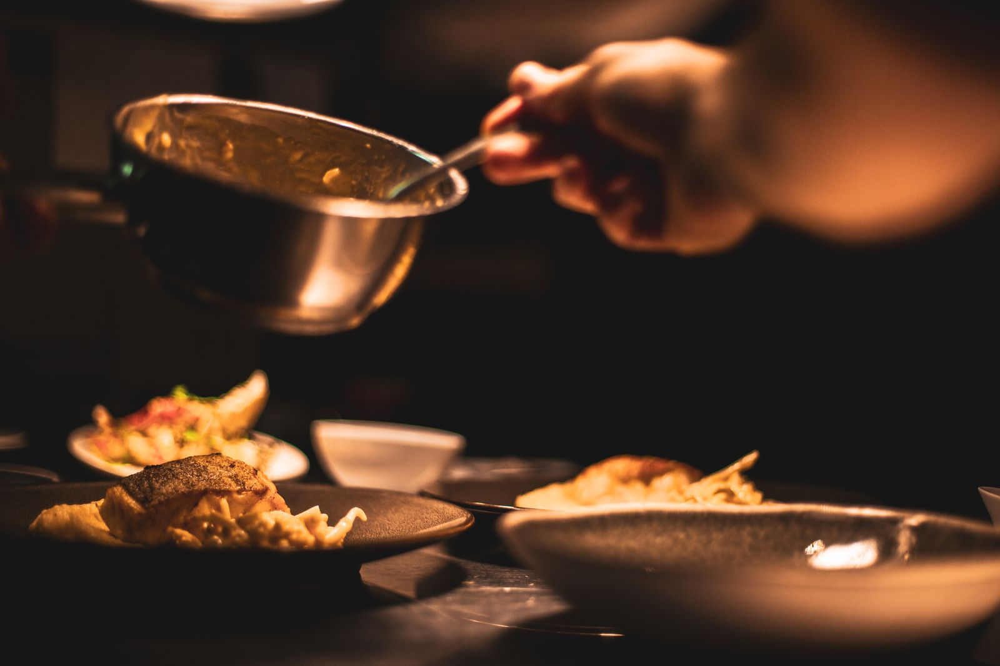
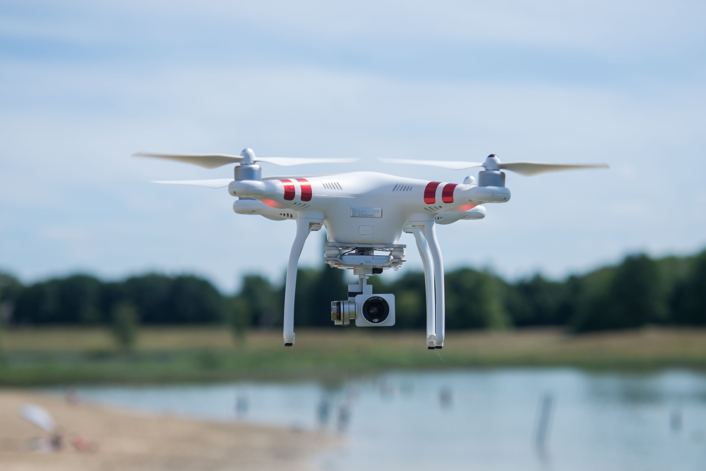
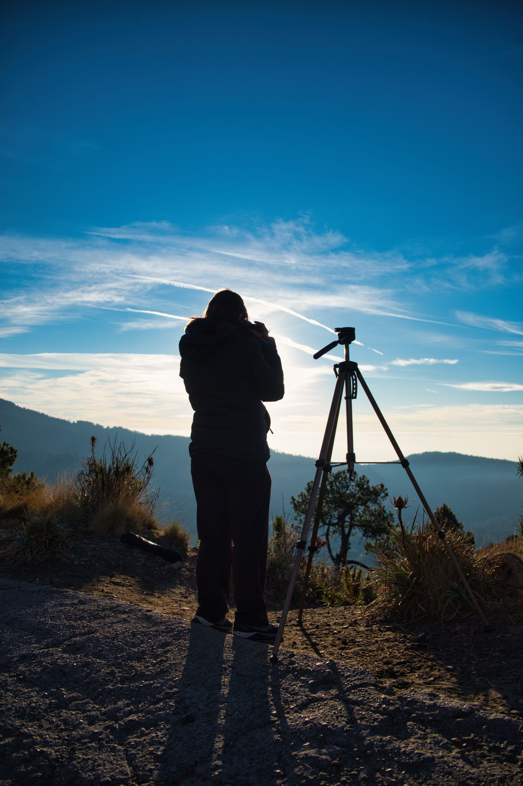
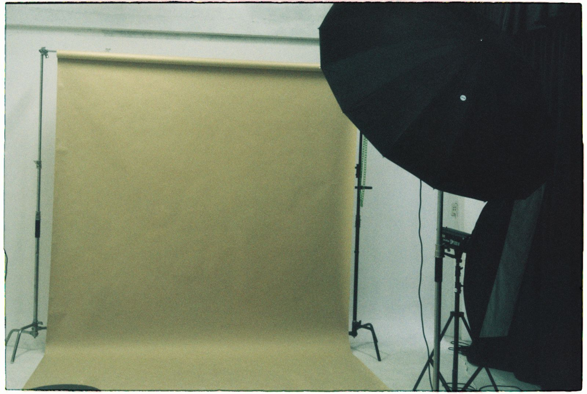

Arbeitsproben
Portfolio
Eine kuratierte Auswahl aus Porträt, Business und Bewegtbild. Filtern Sie nach dem Bereich, der Sie interessiert.








Hinweis: Diese Bildauswahl dient als Platzhalter mit lizenzfreiem Bildmaterial. Für den finalen Launch sollten hier ausschließlich eigene, freigegebene Arbeiten von FOTO ART eingebunden werden.